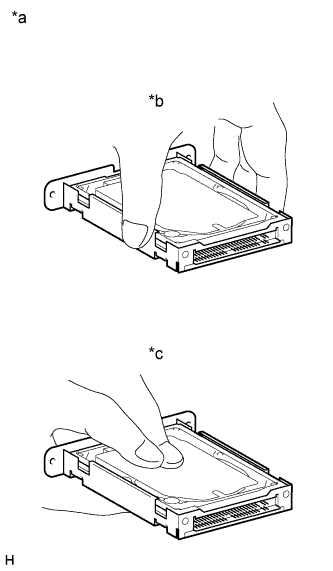

NAVIGATION SYSTEM (for HDD) > PRECAUTION |
| 1.PRECAUTION FOR DISCONNECTING CABLE FROM NEGATIVE BATTERY TERMINAL |
| Condition | Waiting Time |
| Vehicle enrolled in G-BOOK system | 6 minutes |
| Vehicle not enrolled in G-BOOK system | 1 minute |
| 2.PRECAUTION FOR DISCONNECTING CABLE FROM NEGATIVE BATTERY TERMINAL |
| 3.PRECAUTIONS FOR DISPLAY AND NAVIGATION MODULE DISPLAY |
An HDD is built into the display and navigation module display to store map data, etc, which will be used for the navigation system. Therefore, care must be taken for the following points when handling:
| *1 | Hard Disk Drive | *2 | Display and Navigation Module Display |
| *a | Example | - | - |
Do not subject the display and navigation module display to any vibration or shock.
Do not remove the display and navigation module display if there is a risk that condensation may occur.
Take measures to prevent static electricity.
Keep the display and navigation module display away from magnets or magnetized items.
| 4.PRECAUTIONS FOR HARD DISK DRIVE (HDD) |
The map data for the navigation system is stored on the Hard Disk Drive (HDD). Be sure to follow the following instructions when replacing the HDD:
The HDD must only be replaced with a new one. Do not attempt to install a used HDD from another vehicle.
|  |
Do not touch the HDD cover.
| *a | Example |
| *b | CORRECT |
| *c | INCORRECT |
Do not subject the HDD to any vibration or shock .
Do not remove the HDD if there is a risk that condensation may occur.
Take measures to prevent static electricity.
Keep the HDD away from magnets or magnetized items.
Inspect the HDD after replacement.